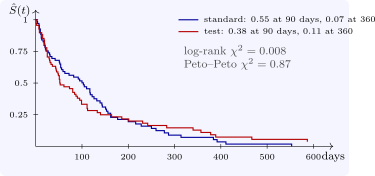

6.3 Weighted log-rank tests
The log-rank test gives every event time equal weight. A weighted log-rank test uses \(\sum _jw_j(d_{1j} - E_{1j})\) with variance \(\sum _jw_j^2V_j\):
- \(w_j = 1\): the log-rank test, best for proportional hazards;
- \(w_j = n_j\): the Gehan–Wilcoxon test, which weights early times, when many are at risk;
- \(w_j = \hat S(t_{(j)})\): the Peto–Peto test, also emphasising early differences but less dependent on the censoring pattern (R’s rho = 1);
- \(w_j = \hat S(t_{(j)})^\rho (1 - \hat S(t_{(j)}))^\gamma \): the Fleming–Harrington family, which can emphasise early (\(\rho > 0\)) or late (\(\gamma > 0\)) differences.
The choice must be made before seeing the data, from what effect is expected; trying several and reporting the smallest \(p\)-value is not legitimate. When the curves cross, as for the two regimens in veteran (Figure 6), early and late differences of opposite sign cancel in the log-rank statistic, and no single test is satisfactory; the right response is to describe the curves, survival at fixed times, or a restricted mean, rather than to rely on one statistic.

Questions on this section
Stuck on something here? Ask below and it stays attached to this topic.